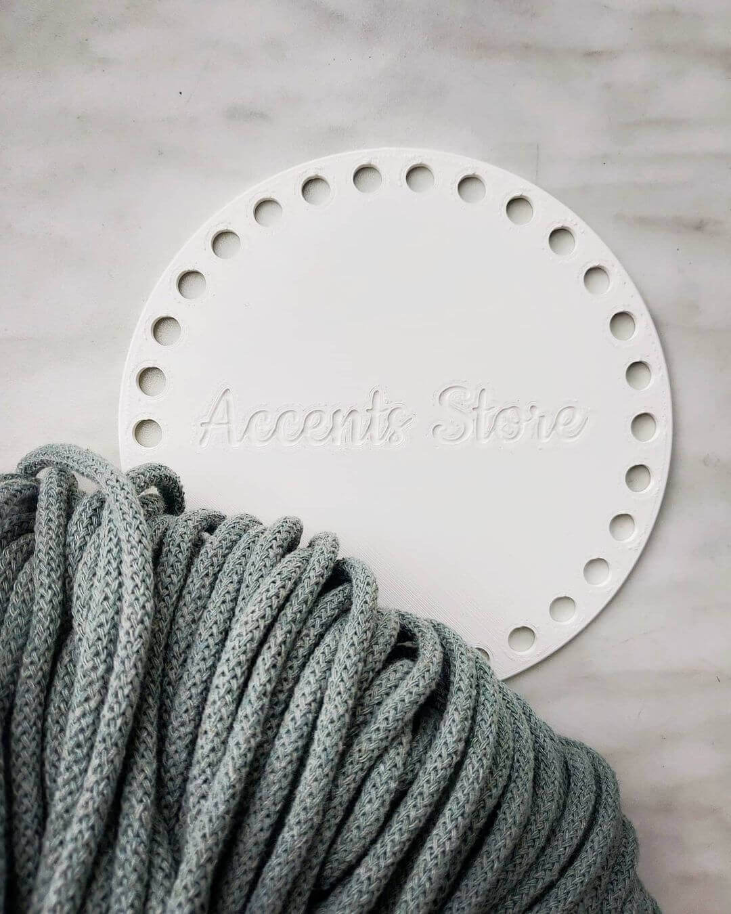
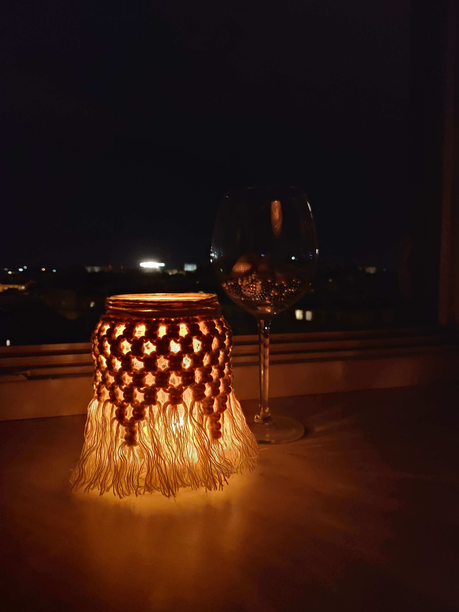
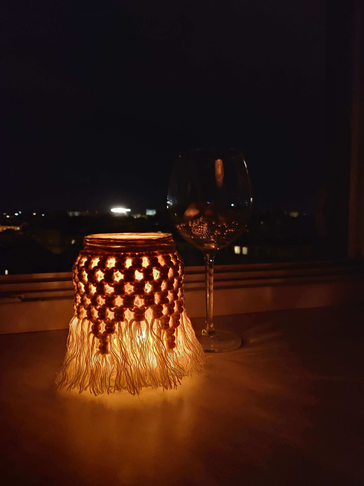

Accents Store - to sklep z ręcznie robionymi torebkami i akcesoriami, które wyróżniają się stylem i dbałością wykonania. Większość z nich wykonana jest na szydełku bądź techniką makramy. Napędza nas kreatywność i ciągła chęć tworzenia tego.
Zamawiając u nas, masz gwarancję, że każdy produkt zrobiony jest z największą dbałością o każdy szczegół. Zapraszamy do naszego świata!
Handmade? Tu chodzi przede wszystkim o oryginalność, ponieważ sklepy oferują cały czas ten sam asortyment, niezaskakujący niczym szczególnym.
Chcesz wyróżnić się w tłumie? W Accents Store znajdziesz ekskluzywne szydełkowe torebki z sznurka bawełnianego i modne siatki wykonane w technice makramy.
Ręczne wykonanie, najwyższa jakość materiałów i nieszablonowe rozwiązania – na to wszystko możesz liczyć w przypadku torebek i akcesoriów zaprojektowanych przez Accents Store. Ciesz się wygodą, wyróżnij się w tłumie i podkreśl swój wyjątkowy styl. Wybierz idealną torebkę i uzupełnij swoją szafę o unikatowy dodatek.
Kopertówki są nie tylko piękne, ale też lekkie i poręczne. Taka torebka będzie pacować do każdej stylizacji.
Świat branży fashion oszalał ma punkcie torebek z siatki. Modne modele już pojawiły się u Ani Kuczyńskiej, Kas Kryst, H&M, czy This is Paper. Pojemna torba wielorazowego użytku to naprawdę bardzo przydatny gadżet. Zabieramy je ze sobą na plażę, zakupy, a nawet na randkę.
P.S. Te modne torby-siatki są tak fotogeniczne, że już są hitem na instagramie - sprawdźcie hashtag #meshbag!
Najpopularnejszy fason torby-siatki u naszych klientek.
Ta siatka też znalazła swoich miłosniczek

Nasza najnowsza oferta!
Każdy z nas chce zadbać aby w miejscu gdzie mieszkamy było przytulnie i po prostu domowo. Kropką na „i” w przypadku urządzania mieszkania są odpowiednie dodatki i akcesoria. Czasem jeden mały drobiazg sprawi, że pomieszczenie będzie całkowicie odmienione. Dekoracje do domu ręcznie robione mogą ozdobić zarówno ogromne, przestronne salony, jak również małe, niewielkie saloniki czy kuchnie, wydobywając z nich to, co najpiękniejsze.
Ręcznie robione dekoracje domowe to sposób na unikalne, wyróżniające się wnętrza. Nie bójmy się indywidualności, wybierajmy niepowtarzane dodatki handmade. Ozdoby handmade do domu sprawią, że wnętrze nabierze charakteru i oryginalności.
Proponujemy w tym miejscu dekoracje i ozdoby do wnętrza: koszyki, makramy i inne. Wszystkie są ręcznie wykonane i dzięki temu zupełnie unikatowe.
To nie tylko niebanalny element wystroju wnętrza, ale również praktyczny. Idealnie sprawdzi się na kuchennym stole, ale ozdobi również salon czy łazienkę. To jak go wykorzystacie, zależy od Was.
Dekoracje ścienne w postaci fantazyjnej, ręcznie plecionej makramy to wspaniałe i unikatowe ozdoby które idealnie wypełnią puste miejsca na ścianie w salonie, sypialni czy przedpokoju. Makrama handmade to modna ostatnimi czasy ozdoba, która dzięki swej prostocie sprawdza się zarówno w nowoczesnych jak i klasycznych wnętrzach.
W Accents Store znajdziesz również ozdobne poduszki dla przytulnego domu i lampiony, które pomogą stworzyć niezwykle romantyczny nastrój.
 

Naszy torebki i decoracje są wykonane ze sznurków zrobionych z przędzy bawełnianej pochodzącej z recyklingu. Materiały recyklingowe, z których wytwarzana jest przędza są zarówno odpadami produkcyjnymi z fabryk jak i pochodzą od konsumentów w formie używanych ubrań i innych bawełnianych tekstyliów.
Do swojego zamówenia zawsze można wybrać kolor indywidualne.
Kwiatowy
Sunset

Jeżyna
Terracotta
Brudny róż
Mgiełka
Morski
Petrol
Awokado
Kiwi
Naturalny
Beżowy
Piaskowy
Perłowy
Srebrny
Musztardowy
Szałwia

Jeansowy
Grafitowy
Czarny
Zamówienia są przyjmowane przez DM na stronę instagram Accents Store.
Czas rozpoczęcia realizacji zamówienia pokrywa się z momentem wpływu wpłaty na rachunek bankowy. Przy odbiorze osobistym możliwa płatność gotówkowa.
Towar wysyłany jest pod adres wskazany klientem za posrednictwem firmy InPost. Cena wysylki 13zł.